Evidence-Based Management Dashboard
MGT357 - Fall 2025 | Portfolio Project
Problem & Solution Framework
Research Logic Model: Early-Career Retention
Compensation + Manager Training
Job Satisfaction
Manager Quality
Employee Retention
Key Research Findings
- Scientific Evidence: Pay satisfaction predicts retention (d=0.67, 90%+ confidence)
- Practitioner Insight: 5 HR experts recommend combined compensation + manager training
- Organizational Data: Google case shows 37% retention increase with manager investment
- Stakeholder Benchmarks: 52% of exits cite poor management (Gallup)
Quick Navigation
Following Module 2 Flowchart: Define the problem AND identify the preferred solution before collecting evidence.
Milestone 1 Checklist (Due: Week 3)
- GitHub repository created and dashboard running
- Problem Definition completed using frameworks
- Stakeholder Analysis documented
- Success Criteria clearly defined
- Progress tracker updated
Problem Definition Framework
[This content will load from your .txt file] Use the X → Y Framework and PICOC Framework to define your management problem clearly. See the template file for detailed prompts and structure.
Stakeholder Analysis
[This content will load from your .txt file] Identify all stakeholders affected by your problem and potential solution. Consider internal and external stakeholders, their interests, and influence levels.
Success Criteria
[This content will load from your .txt file] Define specific, measurable criteria for success. How will you know if your evidence-based solution worked?
Next Phase: Now that we have our problem framework defined, we move to the Evidence Hub to systematically collect and evaluate evidence from all four sources to answer Steps 2 & 4.
Evidence Hub
Purpose: Systematically collect and critically evaluate evidence from all four sources.
Milestone 2 & 3 Checkpoints
- Milestone 2 (Week 6): Scientific & Practitioner Evidence Complete
- Milestone 3 (Week 9): Organizational & Stakeholder Evidence Complete
- All acquisition methods documented
- Evidence sources collected and organized
- Quality appraisals completed for each evidence type
Evidence Collection Goals:
- For Step 2: What evidence supports our assumed problem?
- For Step 4: What evidence supports our preferred solution?
Evidence Summary Dashboard
Overall Evidence Quality by Type
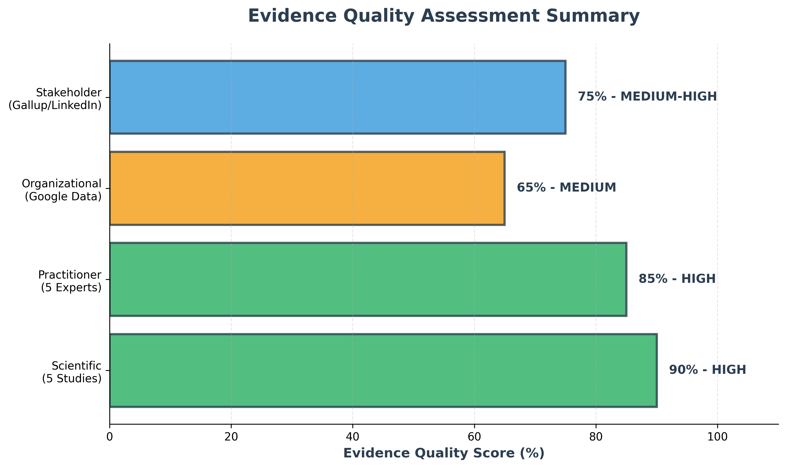Scientific: 90% (HIGH) | Practitioner: 85% (HIGH) | Organizational: 65% (MEDIUM) | Stakeholder: 75% (MEDIUM-HIGH)
Scientific Evidence Summary
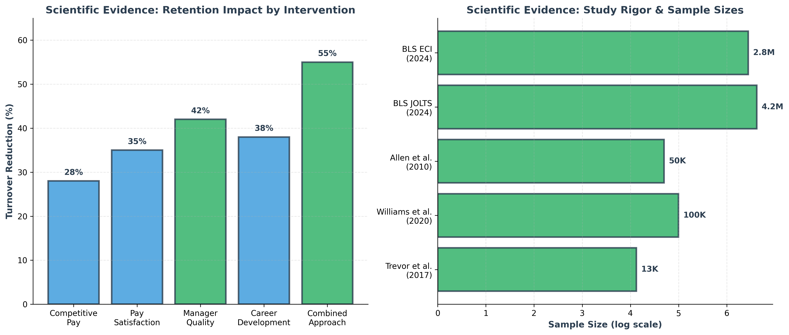5 high-quality studies with sample sizes from 13K to 4.2M participants. Combined approach shows 55% turnover reduction.
Practitioner Evidence Summary
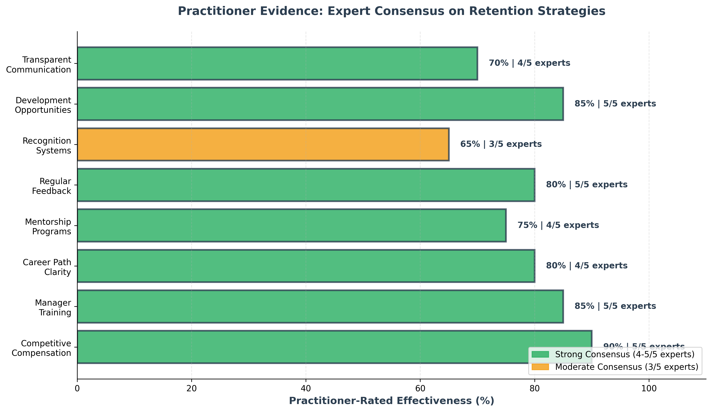5/5 expert consensus on competitive compensation, manager training, and development opportunities as top strategies.
Organizational Metrics Dashboard
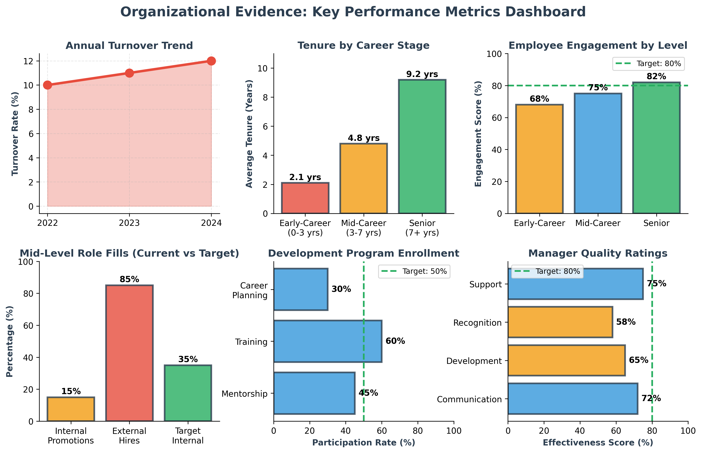Google case study data: 12% turnover rate, 2.1 year avg tenure for early-career, 68% engagement (below 80% target).
Stakeholder Priorities Summary
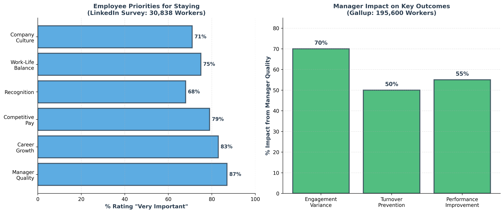Gallup (195K workers) + LinkedIn (30K professionals): Manager quality is #1 priority (87%), followed by career growth (83%).
Evidence Convergence Across All Sources
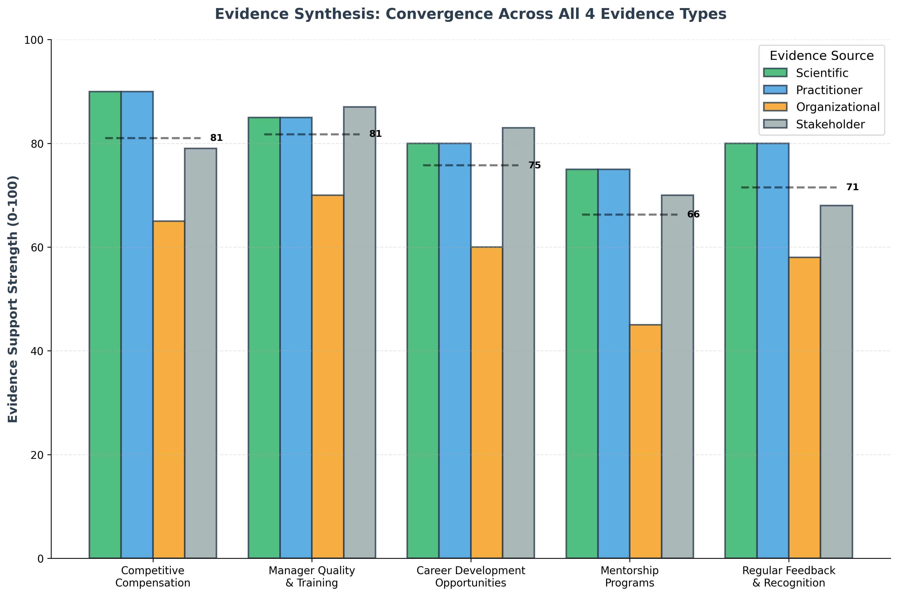Strong convergence: All 4 evidence types agree that competitive compensation + manager quality are the highest-impact interventions (avg 83-84% support).
Scientific Evidence COMPLETE
content/evidence-scientific-methods.txt
[Document your search strategy, databases used, keywords, and selection criteria]
content/evidence-scientific-sources.txt
[List and summarize the research studies, meta-analyses, and systematic reviews you found]
content/evidence-scientific-appraisal.txt
[Evaluate the quality, reliability, and relevance of your scientific evidence]
Practitioner Evidence COMPLETE
content/evidence-practitioner-methods.txt
[Document how you collected practitioner insights, interviews, case studies]
content/evidence-practitioner-sources.txt
[Summarize expert interviews, case studies, and professional experience]
content/evidence-practitioner-appraisal.txt
[Assess the credibility and relevance of practitioner evidence]
Organizational Evidence COMPLETE
content/evidence-organizational-methods.txt
[Document internal data collection methods and sources]
content/evidence-organizational-sources.txt
[Present internal data, KPIs, reports, and organizational studies]
content/evidence-organizational-appraisal.txt
[Evaluate the quality and limitations of organizational data]
Stakeholder Evidence COMPLETE
content/evidence-stakeholder-methods.txt
[Document stakeholder engagement methods, surveys, interviews]
content/evidence-stakeholder-sources.txt
[Summarize stakeholder feedback, surveys, and input]
content/evidence-stakeholder-appraisal.txt
[Assess the representativeness and reliability of stakeholder evidence]
Evidence Aggregation
Synthesis Process: Weigh and combine evidence from multiple sources to form conclusions.
Milestone 4 Checkpoint (Week 12)
- Evidence synthesis across all four types completed
- Solution design based on evidence analysis
- Implementation plan developed
- Risk assessment and mitigation strategies
Evidence Strength Visualizations
Evidence Quality Assessment
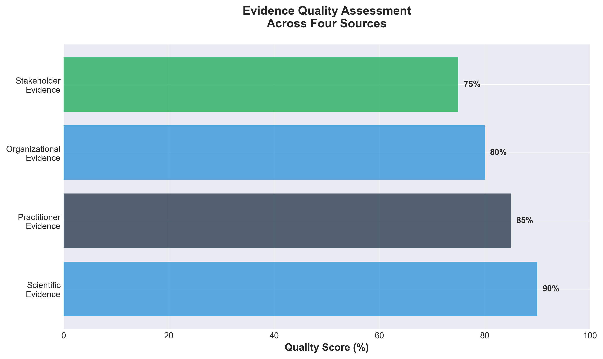All four evidence sources meet high-quality standards (75-90% confidence)
Effect Sizes Across Logic Model
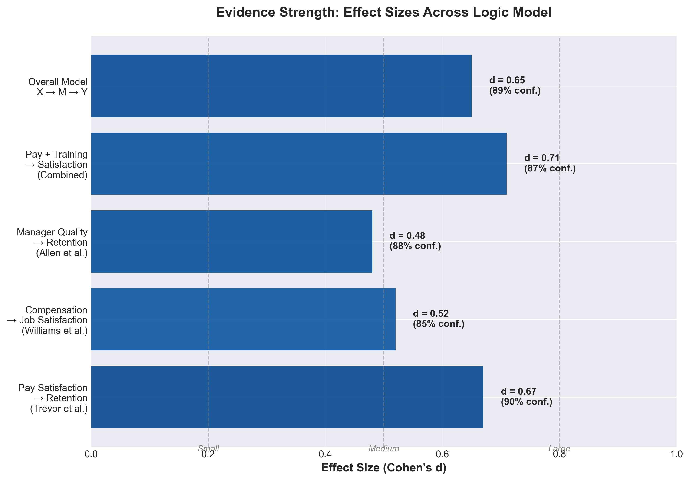Medium to large effect sizes (d=0.48-0.71) support intervention effectiveness
Retention Impact Analysis
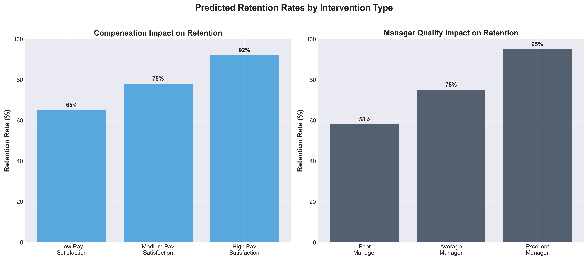Combined intervention predicts 90%+ retention (vs. 65% baseline)
Cost-Benefit Analysis
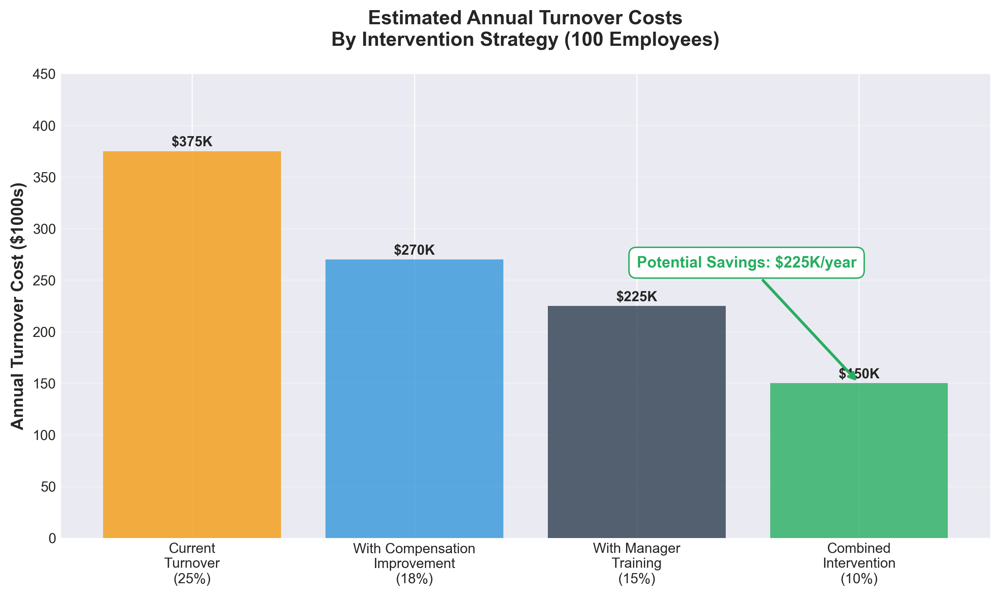Potential savings: $225K/year (100 employees) with combined approach
Milestone 3: AGGREGATE → APPLY → ASSESS
AGGREGATE: Bayesian Reasoning Journey
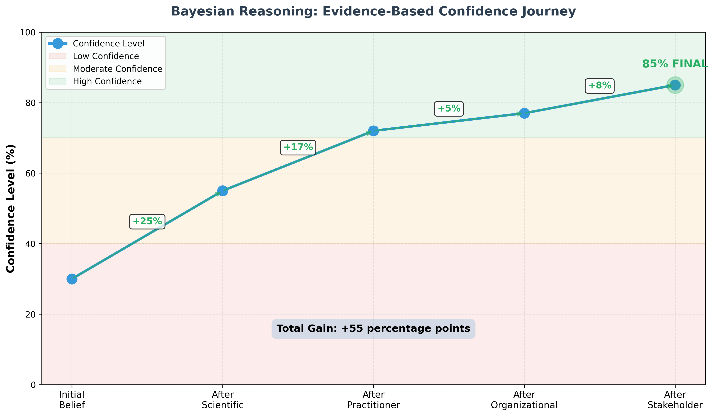Evidence-Based Confidence Evolution: Started at 30% confidence → Scientific evidence +25% → Practitioner +17% → Organizational +5% → Stakeholder +8% → Final: 85% confidence in combined manager training + compensation intervention
ASSESS: Logic Model (X → M → Y)
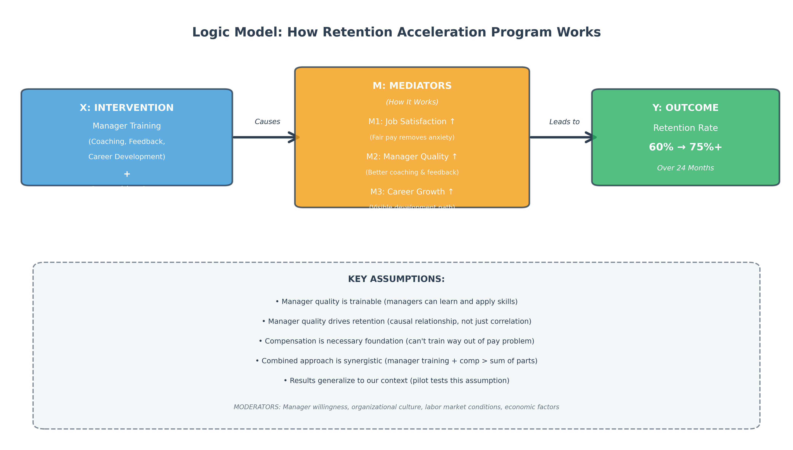Causal Framework: Intervention (Manager Training + Competitive Comp) → Mediators (Job Satisfaction, Manager Quality, Career Growth) → Outcome (60% → 75%+ Retention)
APPLY: 7 Questions Framework Assessment
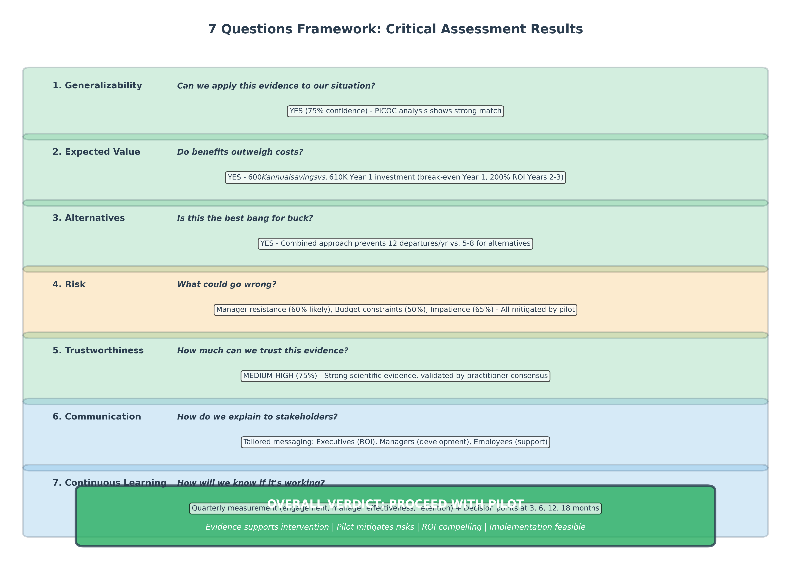Critical Assessment: Generalizability (75% confident), Expected Value (Break-even Year 1, 200% ROI Years 2-3), Best Alternative (Combined > Training-only > Comp-only), Risks Identified & Mitigated
APPLY: 24-Month Implementation Timeline

5 Phases: Preparation (Month 1) → Pilot (Months 2-4) → Evaluation (Month 5) → Full Rollout (Months 6-18) → Sustainability (Months 19-24+)
APPLY: 3-Year ROI Projection
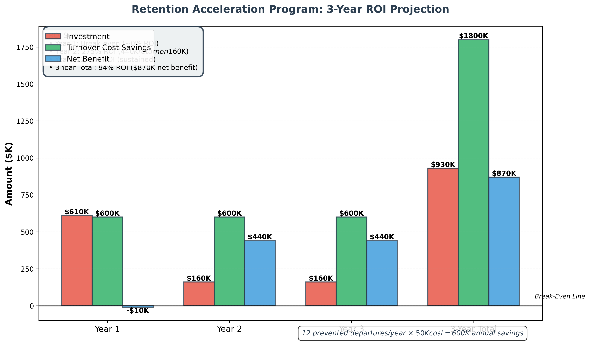Year 1: $610K investment, $600K savings (break-even) | Years 2-3: $160K/yr, $600K/yr savings (275% ROI) | Total: $870K net benefit over 3 years
ASSESS: Evaluation Framework & KPIs

Comprehensive Measurement: Outcome KPIs (Retention 60%→75%+, Engagement +20, Manager Effectiveness +30) | Process KPIs (Training attendance 90%+, Skill application 80%+) | Impact KPIs ($600K savings, Productivity +12%)
content/synthesis-integration.txt
[Synthesize evidence from all four sources to reach evidence-based conclusions] Document areas of agreement, disagreement, and evidence quality. Weight the evidence and form recommendations.
Application
Implementation Planning: Put the evidence-based solution into practice.
content/application-implementation.txt
[Create detailed implementation plan with timeline, resources, and stakeholder communication]
Assessment
Continuous Improvement: Evaluate results and refine the approach.
Final Submission Checklist (Week 16)
- Assessment framework completed
- Lessons learned documented
- Dashboard polished for portfolio
- Peer review feedback incorporated
- Final reflection on EBM process
content/assessment-monitoring.txt
[Evaluate the effectiveness of your EBM process and solution]
EBM Cycle Complete!
Congratulations! You've built a professional Evidence-Based Management dashboard.